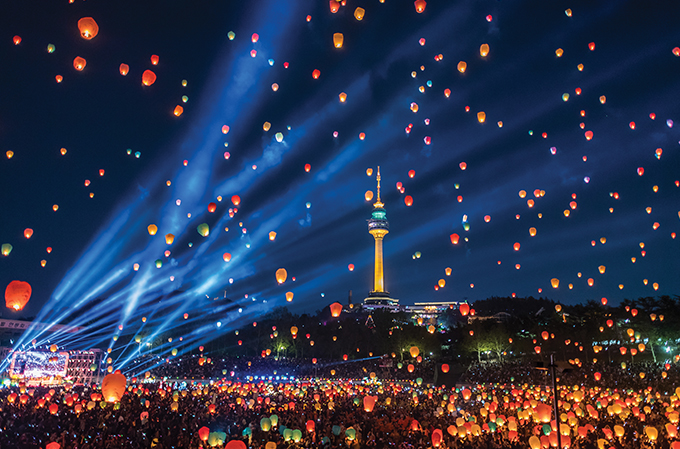
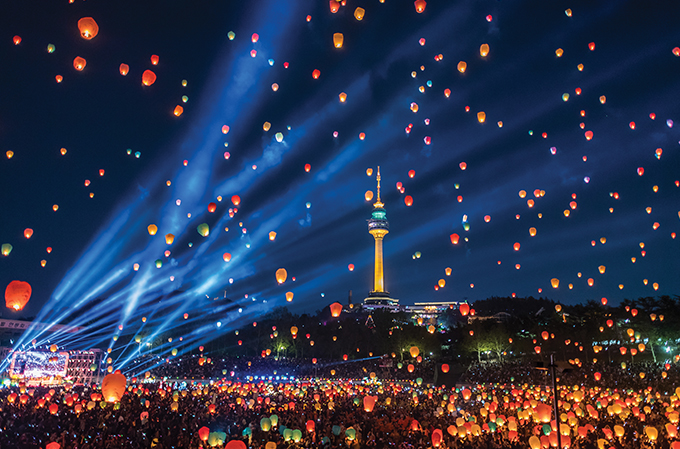

高水准的文化、环境城市
- Home
- 投资优势
- 大邱独特的投资环境
- 高水准的文化、环境城市
高水准的文化、环境城市
高水准的文化、环境城市
申办各种国际赛事与会议
- 成功举办“2002 世界杯”、“2003 夏季大学生运动会”
- 2005年被指定为“国际会议城市”
- 成功申办“2010世界消防员竞技大会”、“2011世界田径选手竞标赛”、“2012世界昆虫学会”、“2013世界能源大会”
大邱展览会议中心(Daegu Exhibition & Convention Center)
- 由于展场使用率接近饱和，因此正在扩建(2011年5月开馆)
- 位置 : 大邱广域市 北区 山格洞1678号(综合流通园区内)
- 规模 : 地皮总面积 20.862 m2(建筑面积87,293 m2)、地上 5层地下 4 层
- 展示场11,616m2(包括会议厅3,872m2)、会议室12间(分割时20间)、宴会厅1,223m2(可容纳 600 名并可分成 7 间会议室)

※ 从2010年的展场的年使用率来看，大邱EXCO达到70%，将近饱和。大邱市为解决展场供应不足的问题，同时作为大邱庆北地区的据点城市，为追求展示会议产业的均衡发展，目前正在扩建EXCO。扩建规模如下：地皮面积 22,152m2(建筑面积57,642m2)、地上5层地下2层(展览场 11,100m2、会议室1,800m2、礼堂 2,000m2、附带设施42,742m2)
国内展览会场的现况(2010)
| KINTEX (高阳) |
COEX (首尔) |
BEXCO (釜山) |
EXCO (大邱) |
KDJ (光州) |
CECO (昌原) |
|
|---|---|---|---|---|---|---|
| 展会面积(㎡) | 53,541 | 36,007 | 26,508 | 11,616 | 9,073 | 7,827 |
| 使用率(％) | 58 | 70 | 55 | 70 | 70 | 50 |
※ 大邱 EXCO 的使用率：′03(70％)、 ′04(72％)、′05(68％)、′06(70.3％)、′07(72.2％)、′08(73％)、′09(67％)
发展低碳素绿色先进城市
- 以申办世界能源大会(WEC)为契机，推进“Solar City(太阳能城市)”项目(从2010年起的五年计划)。
- 树立永久性环保能源形象，使“气候环境模范城市”品牌化。
- 与庆北共同引进“碳素排放权交易所”、“温室气体减缩实绩登记所”等。
丰富多彩的文化活动
- 多样的地方节庆 : 国际歌剧节、国际音乐节(DIMF)、韩医方节、纤维节(PID)
- 在全国范围内最早被指定为“韩医方特区” : 具备350年历史的药令市和药店巷
 
